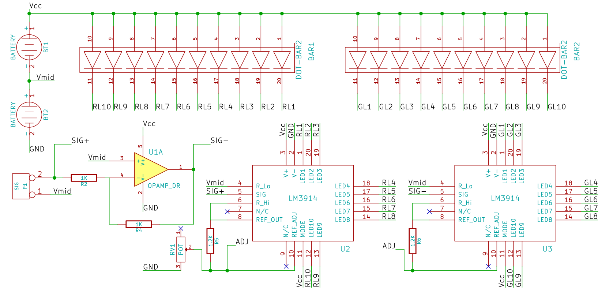
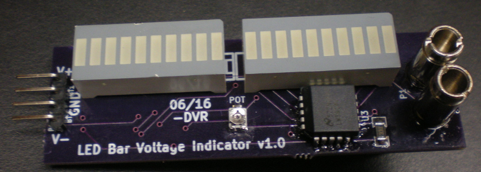
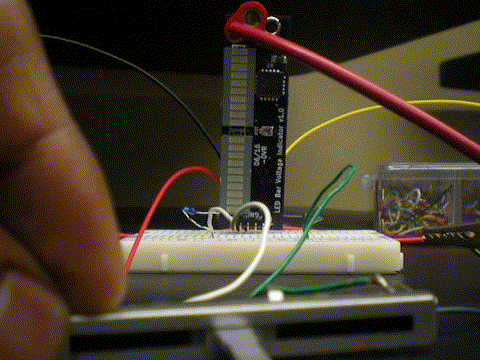
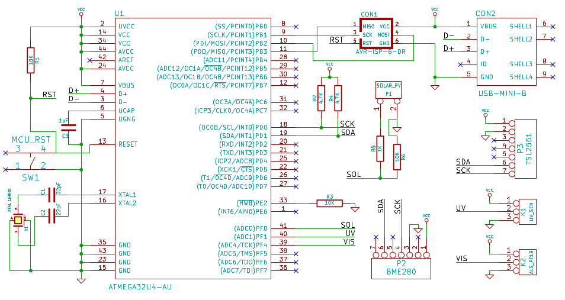
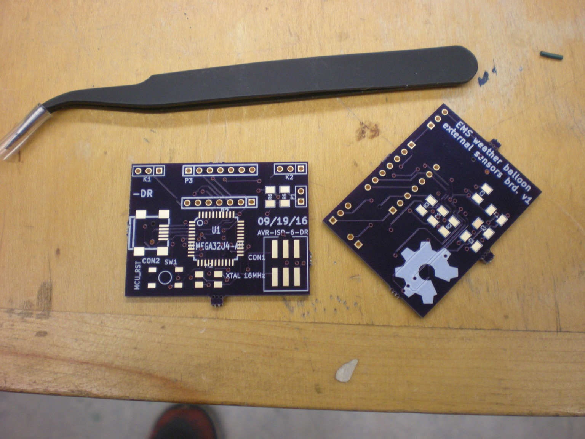
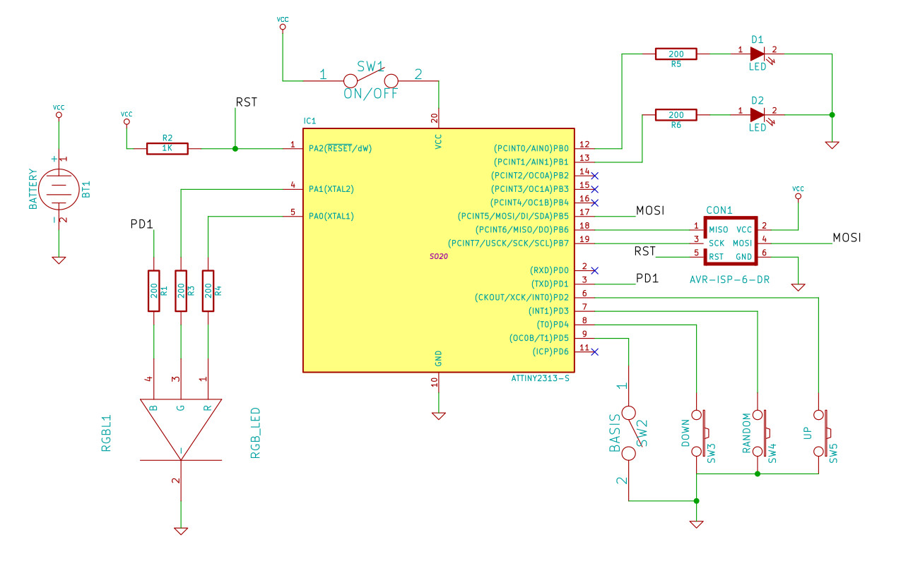
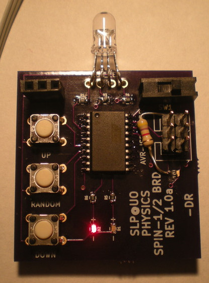
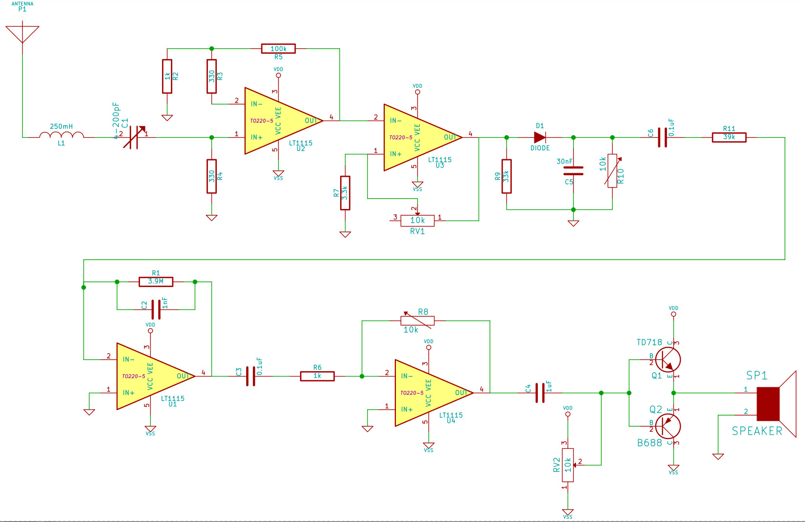

Electronics
Projects involving currents and wires (and other frustrations).
Analog voltage LED bar display

The Oregon Country Fair sees regular participation by students and faculty from the Physics department at the University of Oregon. We typically camp at an "ask a scientist" booth inside the "energy park" and set up from demos allowing us to initiate conversations on solar/wind/turbine/energy concepts. The Physics Dept. Demo room had some nifty coils of wire that they'd use to generate e.m.f. by moving a magnet in and out (or side-to-side) in proximity. They were using galvanometers to demonstrate both magnitude and sign of the induced voltage, but it wasn't flashy enough. So I thought I'd throw together a bad-LED setup.

The basic design would use a resistor-ladder divider to generate voltage-step references, and then use comparators to trigger LEDs. The Texas Instruments LM3914 driver chip does precisely that. Reference everything to some midpoint between the terminals of the power supply, and we get "negative" detection too!

Weather balloon external sensor board

The Weather balloon team at the Eugene Maker Space tasked me with coming up with a sensor board that would sit outside of the temperature insulated payload chassis. After some amount of brainstorming, we decided to put a weather chip, a tiny solar panel, and some kind of spectrometer. I decided to construct a poor man's low resolution spectrometer by mixing together photodiodes with different responsivity peaks. So I went with Adafruit's breakout boards for the TSL2561 (reports luminosity, broadband and IR values), the GUVA-S12SD UV sensor, and the ALS-PT19 natural light sensor chip. Adafruit happens to carry a breakout board for the BME280 temperature, pressure, and humidity sensor chip as well. The idea is to solder all of them on a single PCB.

All of them are meant to talk to an ATMEGA32u4 microcontroller either through I2C bus, or an analog IN pin (we measured the open-circuit voltage of the solar panel). The microcontroller then periodically (4 times a second) comminucates with a computer inside the payload via a USB connection. The firmware relies heavily on the Adafruit_Sensor arduino libraries. After some calibration, we'd have to think of ways to make it always face the sun!

Spin-half

The Science Literacy Program at the University of Oregon often funds graduate students to help develop and teach new courses. In 2013, my advisor Prof. Mike Raymer happened to be creating one called "Quantum Mechanics for Everyone", and asked Chris Jackson and me to help design and TA the course. Naturally, I accepted.
At the time, I was just getting into microcontrollers, and was looking for a project that could use attiny2313 chips. I had to teach Quantum Key Distribution (QKD) to the class, and hence, had to develop an in-class, hands-on activity that would help teach non-majors. This, the spin-half board was born.

The board has an RGB LED, an SPST switch to change "bases," and three push (tactile) buttons. Onboard surface mount LEDs (red and green) indicate if the current state is the "red/blue" basis, or the "green/white" basis. It fits in the palm of one's hand, and is powered with a coin cell (on the back of the board). This document explains how it is meant to be used. It essentially allows a student to function as a spin-half particle, able to respond to external measurements by other students. They then learn to follow the algorithm illustrated in this in-class handout document and learn to respect the Born rule. The activity involved learning to transmit bits from one student to another, and to study the effects of a third student functioning as an eavesdropper. The board was programmed using the six ICSP header pins using code written in avr-gcc. I used a USBtinyISP from Sparkfun to upload the code using the avrdude interface utility.
Low frequency AM receiver

I needed a simple demonstration for AM (amplitude Modulation) based transmission and reception. The primary aim was to demonstrate orthogonality of disjoint frequency bands. And I wanted to do this below 100 kHz, so that a regular oscilloscope could keep up and show some waveforms. DO NOT DO THIS. I was swamped with thermal noise, and just barely got it to work!
The transmitter was using analog multiplier chips. I considered making a Gilbert cell by myself, but couldn't find matched transistor pairs. Other lessons learnt: Arrange gain amplifiers at the receiver in descending order such that the largest gain is nearer the antenna. This way, noise at every stage doesn't get amplified at successive stages too much (work this out mathematically. HW assignment!) Also, note that there are low-noise signal (operational) amplifiers that do the voltage translation, and there are power amplifiers, that can actually drive large amounts of current necessary to vibrate a speaker. Use one of those at the end.
Modulating IR diodes for SNR

(Source: SBprojects.com)
I've attempted to use infrared (IR) emitter-detector pairs in many a project. But unless they are being used as photogates (closely spaced and directly facing each other like IR interrupters), they have always been susceptible to noise. Things got particularly crazy on the SPICE camp Pinball tables, which would rack up points in the presence of incandescent bulbs in the ceiling. The solution is obvious: upshift the information to a higher frequency where there is lesser environmental noise (which is mostly DC). Then use lockin detection, or bandpass filters followed by a demodulation circuit. Sounds complicated, until you realize that commercial remote control technology has been doing this for decades.
The IR receivers come at various IR wavelengths and carrier frequencies. They are astoundingly sensitive, and can pick my signal out from large distances even in sunlight, as long as there is line of sight. People normally advocate using a microcontroller to do both modulation (at the transmission end), and demodulation (at the receiver end), but I'd recommend offloading mundane tasks to dedicated, dump circuits and keeping the microcontroller scheduler free for important tasks.